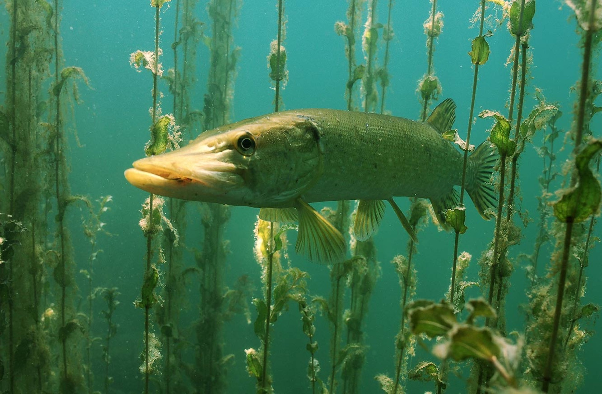
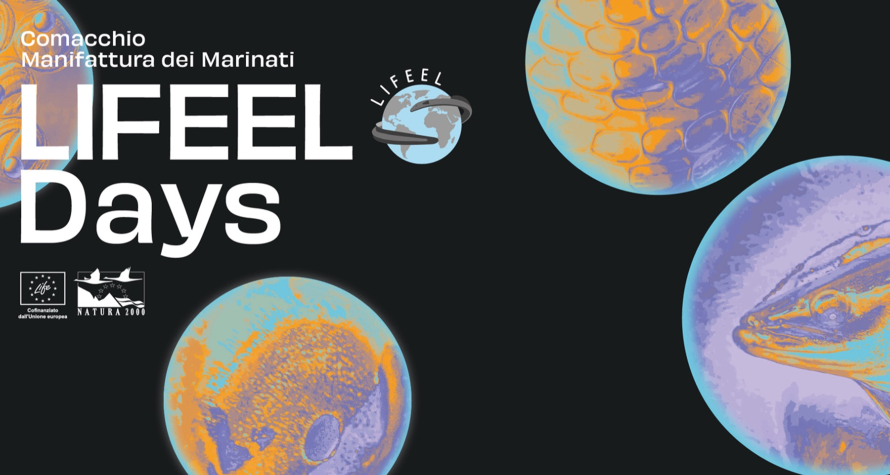
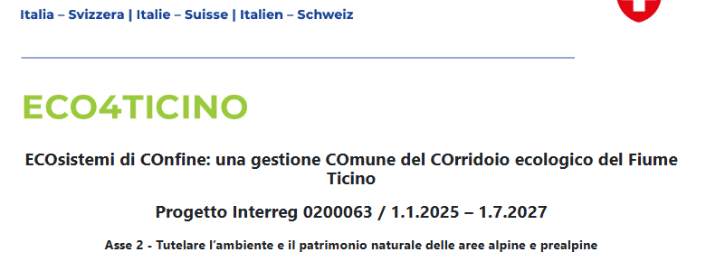

ProSpIttiCo
Un sistema per monitorare le specie ittiche che transitano nei passaggi per pesci. GRAIA è l'unico soggetto beneficiario. La piattaforma con la versione beta è in arrivo.
Gestione Ricerca Ambientale Ittica Acque
Conserviamo le risorse naturali e cerchiamo di rendere la presenza e le attività umane il più possibile compatibili con l'ambiente.

Graia in poche righe
La società è nata nel 1991 da un'iniziativa di quattro professionisti dell'ecologia acquatica e dell'ittiologia, uniti dalla passione per la fauna ittica e la pesca. Il lavoro ci piace, e lo facciamo con passione perché ci crediamo.
Cosa facciamo
Un assetto multidisciplinare, costruito in oltre trent'anni, è la nostra garanzia di competenza.
Carte e piani ittici, conservazione delle specie, incubatoi, acquacoltura, pesca sportiva e professionale.
Biomonitoraggio, limnologia, analisi statistica, batimetria, qualità delle acque.
Ripristino della continuità fluviale, riqualificazione ecologica, rimboschimento, fitodepurazione.
Progettazione e monitoraggio delle migrazioni, deflusso minimo vitale, svasi.
Progetti per la conservazione di specie e habitat, cambiamenti climatici, reti ecologiche.
Percorsi nelle scuole, libri e allestimenti, eventi per il territorio.
Progetti in primo piano

Non solo la conclusione formale del progetto: un momento di restituzione al territorio, in cui la conservazione dell'anguilla europea diventa responsabilità collettiva e occasione di dialogo tra scienza, istituzioni e cittadini.
Leggi la newsUn sistema per monitorare le specie ittiche che transitano nei passaggi per pesci. GRAIA è l'unico soggetto beneficiario. La piattaforma con la versione beta è in arrivo.

Un corridoio ecologico da gestire insieme, oltre confine, lungo il fiume Ticino.
BLU Progetti
Dal 2006 gli stessi soci di GRAIA hanno fondato BLU Progetti, società di ingegneria per la riqualificazione ecologica, ecosistemica e ambientale.
Progettazione e direzione lavori per committenti pubblici e privati. Partner del progetto GE.RI.KO. MERA, Interreg V-A Italia–Svizzera 2014–2020.
Conosci BLU ProgettiAlcuni dei nostri clienti
News dal mondo GRAIA
Il progetto si chiude con un momento di restituzione al territorio.
Online la versione beta del sistema di monitoraggio in sviluppo.
Il monitoraggio della biodiversità ittica nei corridoi fluviali va avanti.